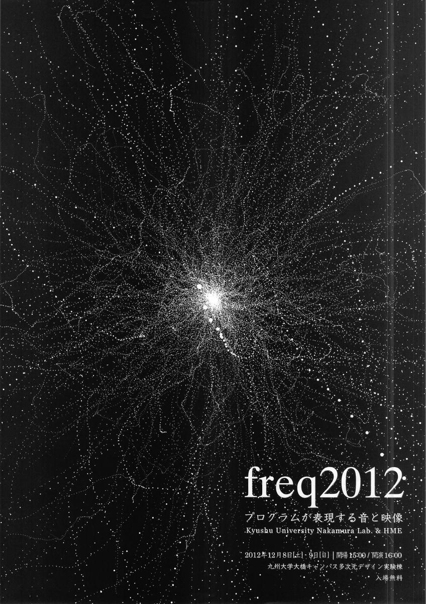

freq2012「プログラムが表現する音と映像」
2012
- 日時
- 2012年12月8日（土）〜9日（日）開場 15:00／開演 16:00
- 会場
- 九州大学大橋キャンパス 多次元デザイン実験棟（無料）
- 主催
- 九州大学大学院芸術工学研究院 中村研究室
- 共催
- 九州大学大学院 HME育成プログラム
- 運営統括
- 藤原尚紀
- 協力
- NTT西日本
TRP
照明屋
Rec-lab
九州大学大学院芸術工学研究院 尾本研究室
研究室内外のアーティストの作品を、パフォーマンス・ショーケースを中心に上演しました。
プログラムはパンフレットのスケジュールによります。事前のフライヤーでは一部の作品名が異なります（藤原尚紀《Transition》、小寺未知留《感傷的な海》、久田茂輝《Encounter with Sound》、船津文弥《Sound Drawer》、小島順一《V.A.》、檜垣智也《ほのめかし》、中村滋延 映像音響詩《reassembly》、城一裕《Laser Record》）。冨田勇人（TOM）はフライヤーには載っていません。フライヤーに載っている当時のWebページ（nkmrsgnb.info/freq/2012/）は、Wayback Machine に記録がありません。
12月8日
- 中間亮佑《Spatial Looper 2》
- 南部晃史《Seq:cross》
- 小寺未知留＋南部晃史《Virginie Dedieu》
- 冨田勇人（TOM）《talk》
- 土下竜人《げんげ》
- 城一裕《cutting record - a record without prior acoustic information》（ゲスト）
- invisible designs lab. ＋ anno lab《atmosphere》（ゲスト）
12月9日
- 小島順一《Variation Animals》
- 夏天長《都市の歌》
- 山田雄也《音声ング》
- 久田茂輝《Keyboard Painting》
- 藤原尚紀《F(music)》
- 小寺未知留《BLT as minimal music》
- 中村滋延《Reassembly》
- 檜垣智也《こだま(Echos)》
展示
- 船津文弥《Pianino》
資料

フライヤー（表面）- フライヤー（PDF）
- パンフレット（PDF）